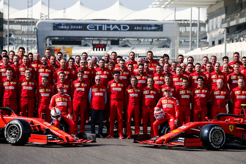
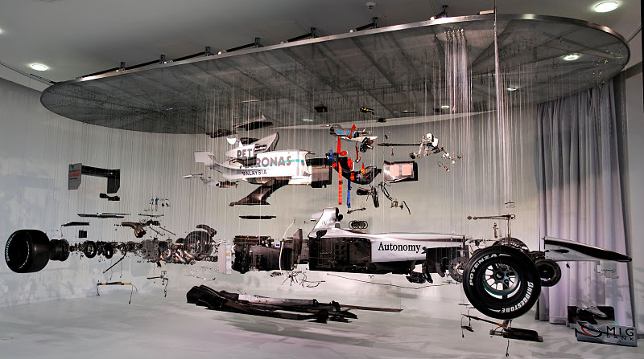
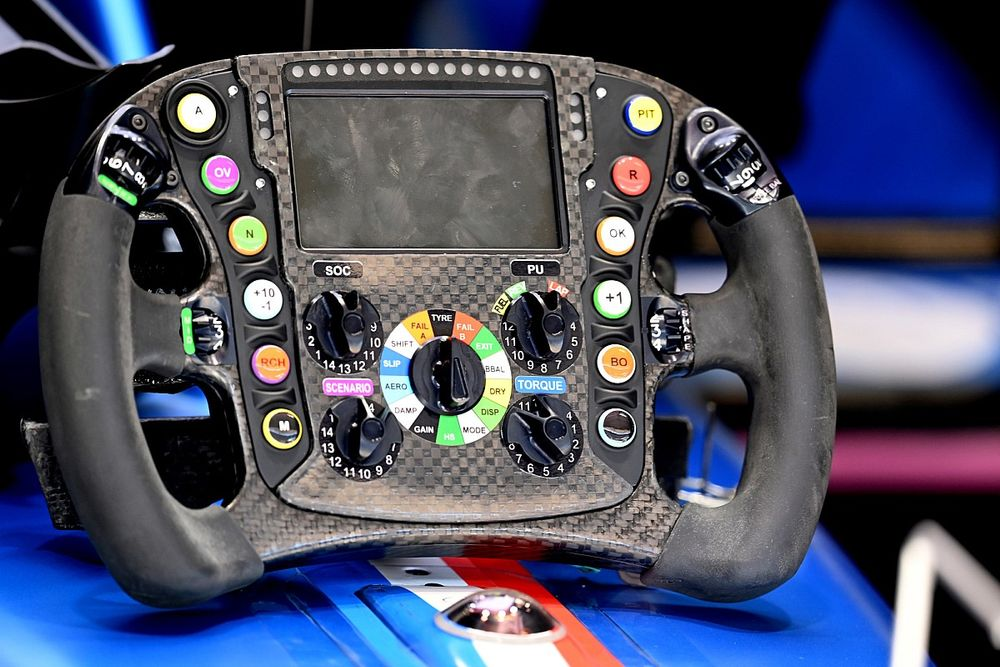
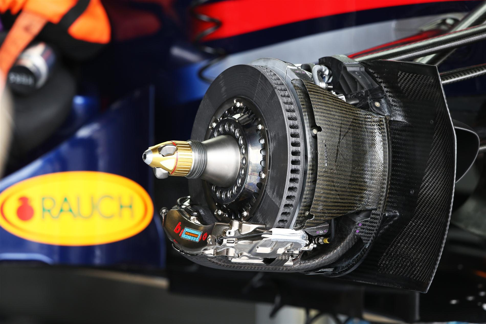
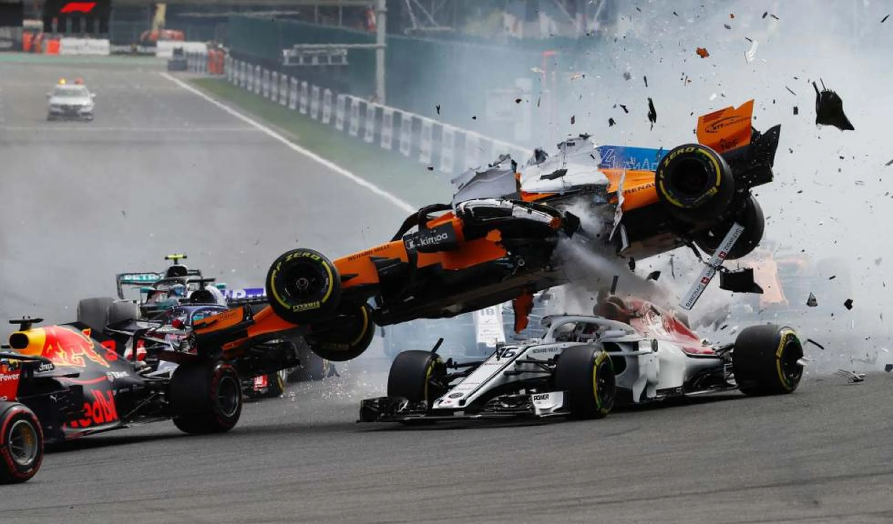

600 Personas en un Equipo
Un equipo de Fórmula 1 puede estar compuesto por hasta 600 personas, la mayoría de las cuales trabajan detrás de escena.

Auto de $7 millones
El costo promedio de un auto de Fórmula 1 es de aproximadamente $7.2 millones de dólares con todos sus componentes.

Volante con 20 Botones
El volante de un Fórmula 1 tiene hasta 20 botones que tienen diferentes funciones para hacer posible y efectiva la carrera.

Frenos a 1000°C
Los frenos de fibra de carbono pueden alcanzar temperaturas de hasta 1000 grados centígrados, la misma temperatura que la lava fundida.

Cascos Resilientes
Los cascos de Fórmula 1 deben ser extremadamente ligeros y resistentes, sometiéndose a rigurosas pruebas de fragmentación y deformación.

Impactos a 100 MPH
Gracias a rigurosas pruebas de seguridad, los pilotos de Fórmula 1 pueden sobrevivir a impactos a altas velocidades.

Pérdida de 4 kg por Carrera
Las altas temperaturas en la cabina son la principal razón por la que los pilotos pueden perder hasta 4 kg en una sola carrera.